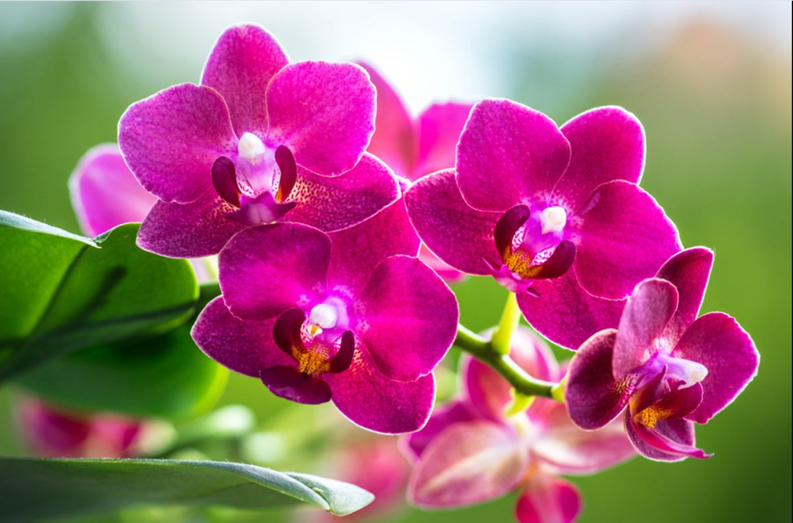

Tumbuhan unik
Rafflesia arnoldii
Bunga berukuran besar yang terkenal dengan bau khasnya. Tumbuhan ini hidup sebagai parasit pada tumbuhan inang dan ditemukan di beberapa wilayah Sumatra.
Jelajahi keanekaragaman tumbuhan Indonesia, pelajari manfaatnya, dan kenali cara menjaga kelestariannya untuk masa depan.
Mulai Belajar ↓Mengenal tumbuhan sebagai bagian penting dari kehidupan di Bumi.
Flora adalah istilah untuk seluruh jenis tumbuhan yang terdapat di suatu wilayah atau lingkungan tertentu. Flora meliputi rumput, bunga, semak, tanaman pangan, hingga pohon-pohon besar.
Indonesia memiliki keanekaragaman flora yang tinggi karena kondisi iklim tropis dan beragam habitat, seperti hutan hujan, pegunungan, rawa, serta kawasan pesisir.
Setiap tumbuhan mempunyai peran dalam ekosistem, mulai dari menyediakan makanan hingga menjadi tempat hidup berbagai hewan.
Berikut beberapa contoh tumbuhan yang memiliki keunikan dan peran penting.
Bunga berukuran besar yang terkenal dengan bau khasnya. Tumbuhan ini hidup sebagai parasit pada tumbuhan inang dan ditemukan di beberapa wilayah Sumatra.

Kelompok pohon tropis yang berperan dalam ekosistem hutan. Meranti juga dikenal sebagai penghasil kayu sehingga perlu dikelola secara bertanggung jawab.

Tumbuhan berbunga dengan bentuk dan warna yang beragam. Banyak jenis anggrek tumbuh di daerah tropis, baik menempel pada pohon maupun di tanah.

Tumbuhan yang hidup di wilayah pesisir tertentu. Mangrove membantu menahan sedimen dan menjadi habitat bagi berbagai organisme.
Tumbuhan memberikan banyak manfaat bagi manusia dan keseimbangan lingkungan.
Melalui fotosintesis, tumbuhan menggunakan energi cahaya untuk menghasilkan makanan dan melepaskan oksigen.
Tumbuhan menyediakan sumber makanan dan habitat bagi banyak makhluk hidup.
Berbagai tumbuhan dimanfaatkan sebagai bahan pangan, obat, serat, dan bahan baku.
Akar tumbuhan membantu mengikat tanah dan mengurangi risiko erosi.
Keanekaragaman tumbuhan menghadapi berbagai ancaman yang dapat merusak habitat dan mengurangi jumlah populasi tumbuhan tertentu.
Melestarikan flora tidak harus dimulai dari tindakan besar. Kita bisa mulai dengan menanam dan merawat tumbuhan, menjaga kebersihan lingkungan, mengurangi pemborosan kertas, serta mendukung perlindungan hutan.
Kembali ke Beranda